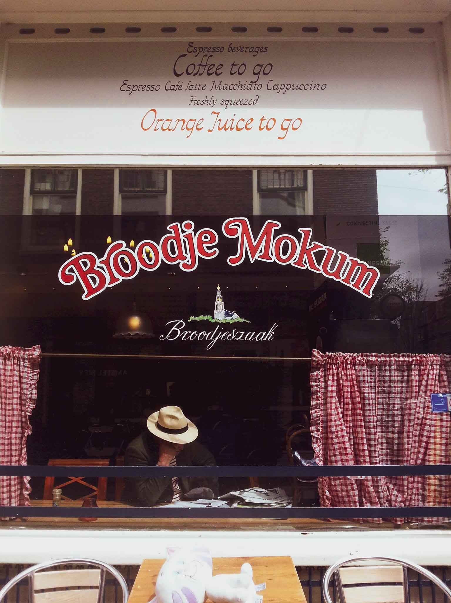

Jordaanse bal
Authentieke, zelfgemaakte Jordaanse bal. Met mosterd of mayo.
Broodjeszaak · Rozengracht 26 · de Jordaan
Authentieke gerechten in hartje Amsterdam. Al ruim 40 jaar smeren we hier broodjes voor de buurt, met onze eigen Jordaanse bal als vaste hardloper.
Maandag t/m zaterdag open van 9:00 tot 17:00 · 020 623 1966

Al jarenlang zelf gemaakt in onze eigen keuken. Hier staan we om bekend.
Authentieke, zelfgemaakte Jordaanse bal. Met mosterd of mayo.
Huisgemaakt. Met ui en/of ei.
Authentiek Hindoestaanse kip, op het brood van je keuze.
Hindoestaanse specerijen in de Jordaanse keuken.
We staan graag in de keuken en experimenteren maar al te graag. Zo kwamen we tot Hindoe Meals: authentieke Hindoestaanse gerechten, bereid met dagverse producten en natuurlijk de Jordaanse liefde en gezelligheid die je van ons gewend bent. Zin in een Hollandse maaltijd? Die maken we ook.
Alle maaltijden worden dagvers bereid, snel teruggekoeld en ingeseald. Zo heb je ze thuis net zo lekker als bij ons.
Maaltijden bestellenAl ruim 40 jaar is Broodje Mokum een begrip in het hartje van Amsterdam, de Jordaan. Ons avontuur begon 21 jaar geleden, toen wij de zaak mochten overnemen van Marrie en Willem. Sindsdien voelt het niet als werken, maar als thuiskomen.
De buurvrouw die stipt om 9 uur 's ochtends een cappuccino komt halen. De vaste klant die elke zaterdag om 4 uur zijn eigen omelet met ui, spek en groente bestelt. Wij kennen onze klanten, en zij kennen ons: de gezellige koffievrouw die bij binnenkomst al weet wat je wilt, of de man die aan grappen geen gebrek heeft.
Kinderen komen langs voor een koekje of om jus d'orange te persen, brengen met trots een broodje naar de klant en hebben jaren later een zaterdagbaantje bij ons. Zelfs de honden uit de buurt weten ons te vinden, voor een plakkie worst.
Wie we zijn? Het staat hierboven. Maar vraag het voor de zekerheid even aan de buurt, want die weet net zoveel over ons als wij over hen.